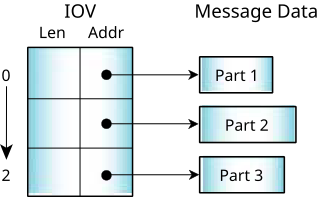
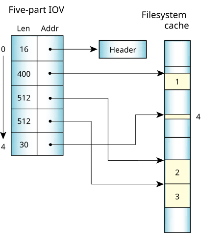

Since our messaging services copy a message directly from the address space of one thread to another without intermediate buffering, the message-delivery performance approaches the memory bandwidth of the underlying hardware.
The kernel attaches no special meaning to the
content of a message—the data in a message has meaning only as mutually
defined by the sender and receiver. However, well-defined
message types are also provided so that user-written processes or threads
can augment or substitute for system-supplied services.
The messaging primitives support multipart transfers, so that a message delivered from the address space of one thread to another needn't pre-exist in a single, contiguous buffer. Instead, both the sending and receiving threads can specify a vector table that indicates where the sending and receiving message fragments reside in memory. Note that the size of the various parts can be different for the sender and receiver.

Each IOV can have a maximum of 524288 parts. The sum of the sizes of the parts must not exceed SSIZE_MAX.
The multipart transfers are also used extensively by filesystems. On a read, the data is copied directly from the filesystem cache into the application using a message with n parts for the data. Each part points into the cache; this compensates for the fact that cache blocks aren't contiguous in memory.

Since message data is explicitly copied between address
spaces (rather than by doing page table manipulations),
messages can be easily allocated on the stack instead of
from a special pool of page-aligned memory for MMU
page flipping.
As a result, many of the
library routines that implement the API between client and
server processes can be trivially expressed, without
elaborate IPC-specific memory allocation calls.
#include <unistd.h>
#include <errno.h>
#include <sys/iomsg.h>
off64_t lseek64(int fd, off64_t offset, int whence) {
io_lseek_t msg;
off64_t off;
msg.i.type = _IO_LSEEK;
msg.i.combine_len = sizeof msg.i;
msg.i.offset = offset;
msg.i.whence = whence;
msg.i.zero = 0;
if(MsgSend(fd, &msg.i, sizeof msg.i, &off, sizeof off) == -1) {
return -1;
}
return off;
}
off_t lseek(int fd, off_t offset, int whence) {
return lseek64(fd, offset, whence);
}
This code essentially builds a message structure on the stack, populates it with various constants and passed parameters from the calling thread, and sends it to the filesystem manager associated with fd. The reply indicates the success or failure of the operation.